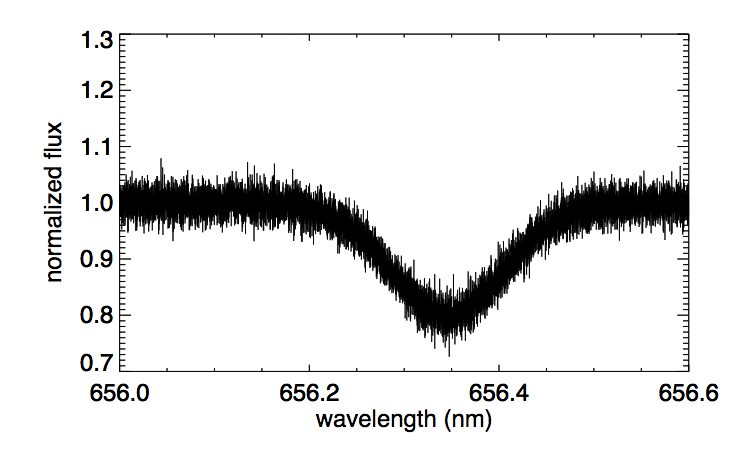

Forrige side🙂 🙁Observasjoner av spektrallinjer
Og dermed er vi fremme ved den ene innleveringoppgaven 1D.6. Da får du et observert spektrum med støy:

Her skal du bruke minste kvadraters metode for å finne et estimat av den glatte underliggende kurven og dermed av temperaturen til gassen. Du kjenner nå modellen for F(λ) og skal dermed tilpasse de ukjente parameterene λ0, σ og Fmin på akkurat samme måte som i 1C. Egentlig kjenner du jo λ0 som er senteret i spektrallinjen, men hvis stjerna har en hastighet i forhold til observatøren så får vi også en Dopplereffekt pga. egenhastigheten (peculiar velocity, se del 1C) og dermed endres senterlinja λ0. Denne endringen i bølgelengde kan du bruke til å finne egenhastigheten til stjerna. Neste side